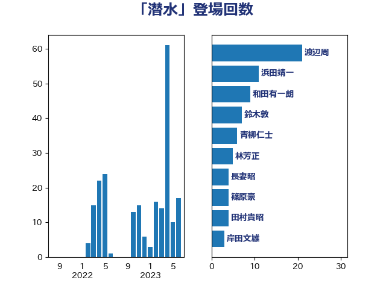

単語「潜水」

| 渡辺周 | 立憲民主党 | 21 回 |
| 浜田靖一 | 自由民主党 | 11 回 |
| 和田有一朗 | 日本維新の会 | 9 回 |
| 鈴木敦 | 国民民主党 | 7 回 |
| 青柳仁士 | 日本維新の会 | 6 回 |
| 林芳正 | 自由民主党 | 5 回 |
| 長妻昭 | 立憲民主党 | 4 回 |
| 篠原豪 | 立憲民主党 | 4 回 |
| 田村貴昭 | 日本共産党 | 4 回 |
| 岸田文雄 | 自由民主党 | 3 回 |
| たがや亮 | れいわ新選組 | 3 回 |
| 鬼木誠 | 立憲民主党 | 2 回 |
| 長島昭久 | 自由民主党 | 2 回 |
| 道下大樹 | 立憲民主党 | 2 回 |
| 赤嶺政賢 | 日本共産党 | 2 回 |
| 美延映夫 | 日本維新の会 | 2 回 |
| 猪瀬直樹 | 日本維新の会 | 2 回 |
| 枝野幸男 | 立憲民主党 | 2 回 |
| 本庄知史 | 立憲民主党 | 2 回 |
| 末松義規 | 立憲民主党 | 2 回 |
| 志位和夫 | 日本共産党 | 2 回 |
| 平木大作 | 公明党 | 2 回 |
| 山添拓 | 日本共産党 | 2 回 |
| 山井和則 | 立憲民主党 | 2 回 |
| 住吉寛紀 | 日本維新の会 | 2 回 |
| 三木圭恵 | 日本維新の会 | 2 回 |
| 高木啓 | 自由民主党 | 1 回 |
| 高市早苗 | 自由民主党 | 1 回 |
| 音喜多駿 | 日本維新の会 | 1 回 |
| 青山繁晴 | 自由民主党 | 1 回 |
| 長浜博行 | 無所属 | 1 回 |
| 鈴木庸介 | 立憲民主党 | 1 回 |
| 羽田次郎 | 立憲民主党 | 1 回 |
| 米山隆一 | 立憲民主党 | 1 回 |
| 稲田朋美 | 自由民主党 | 1 回 |
| 神谷宗幣 | 参政党 | 1 回 |
| 石破茂 | 自由民主党 | 1 回 |
| 石川香織 | 立憲民主党 | 1 回 |
| 玄葉光一郎 | 立憲民主党 | 1 回 |
| 熊田裕通 | 自由民主党 | 1 回 |
| 杉本和巳 | 日本維新の会 | 1 回 |
| 木村次郎 | 自由民主党 | 1 回 |
| 新藤義孝 | 自由民主党 | 1 回 |
| 新垣邦男 | 立憲民主党 | 1 回 |
| 斎藤アレックス | 国民民主党 | 1 回 |
| 斉藤鉄夫 | 公明党 | 1 回 |
| 岩屋毅 | 自由民主党 | 1 回 |
| 小野寺五典 | 自由民主党 | 1 回 |
| 小西洋之 | 立憲民主党 | 1 回 |
| 小山展弘 | 立憲民主党 | 1 回 |
| 安江伸夫 | 公明党 | 1 回 |
| 大塚耕平 | 国民民主党 | 1 回 |
| 城井崇 | 立憲民主党 | 1 回 |
| 國場幸之助 | 自由民主党 | 1 回 |
| 吉田宣弘 | 公明党 | 1 回 |
| 勝部賢志 | 立憲民主党 | 1 回 |
| 伊波洋一 | 無所属 | 1 回 |
| 井野俊郎 | 自由民主党 | 1 回 |
| 井上哲士 | 日本共産党 | 1 回 |
| 三上えり | 立憲民主党 | 1 回 |
| ながえ孝子 | 無所属 | 1 回 |